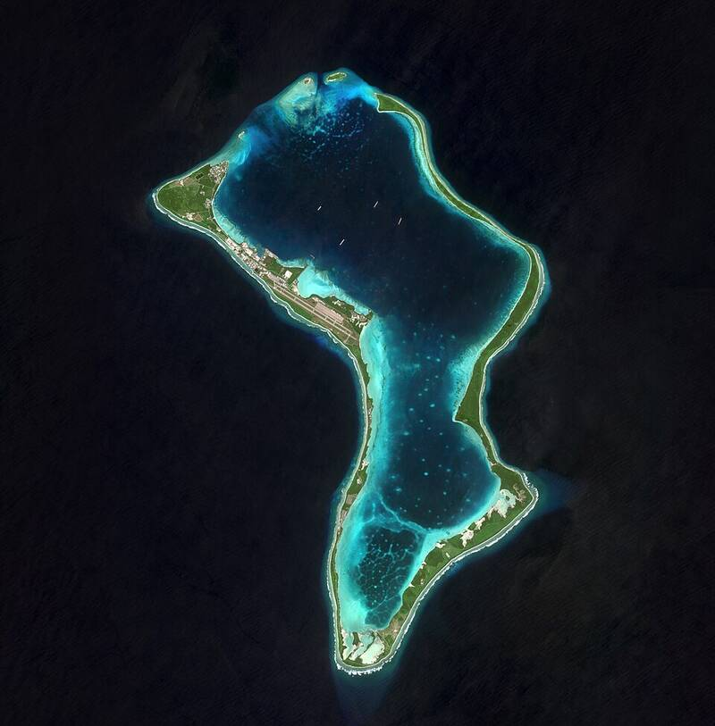

Diego Garcia
Indian Ocean

A British island territory that hosts a joint UK and U.S. naval and air base. 1
Open in the interactive Watcher
Sources
- Diego Garcia Wikipedia
Indian Ocean

A British island territory that hosts a joint UK and U.S. naval and air base. 1
Open in the interactive Watcher